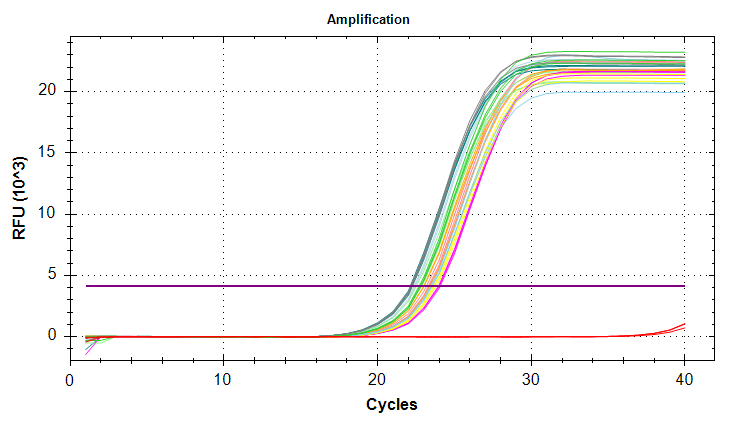
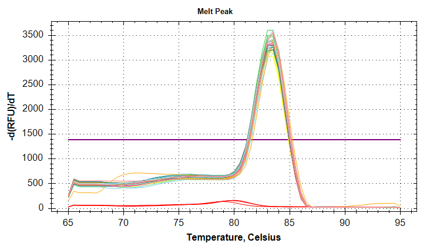
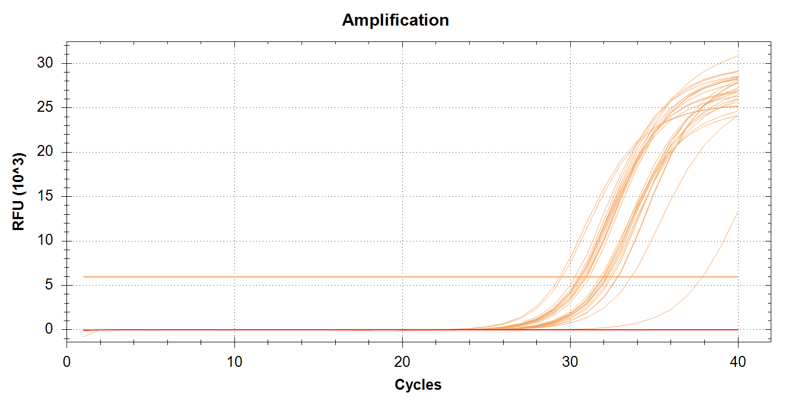
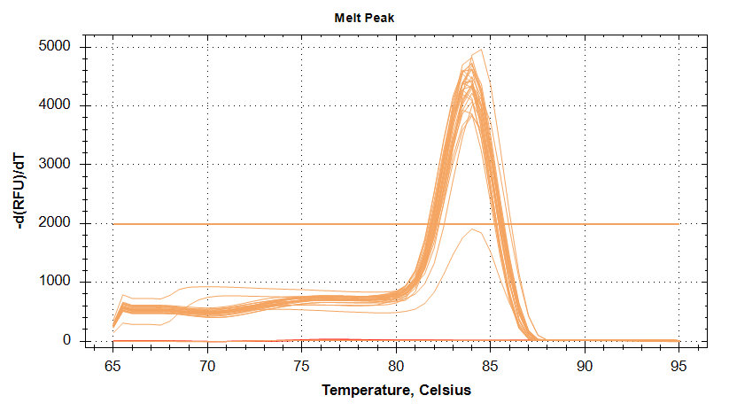
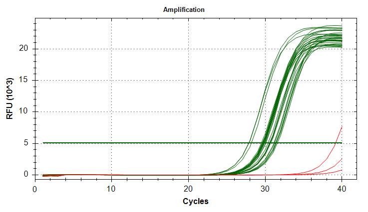
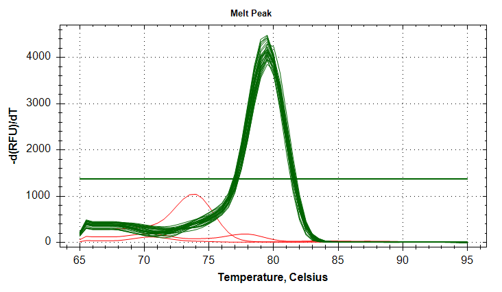
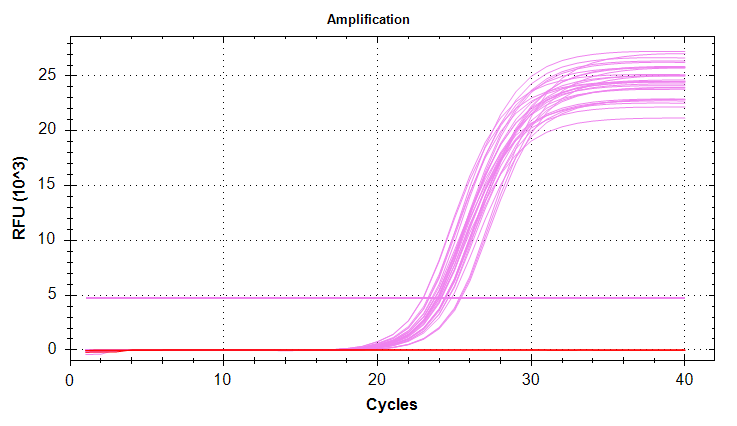
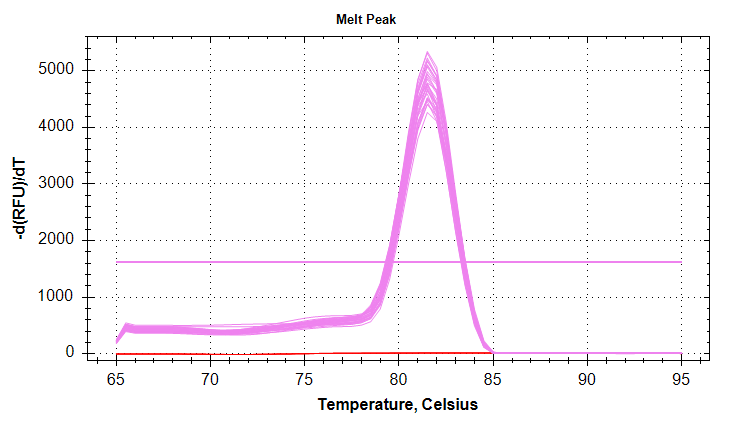
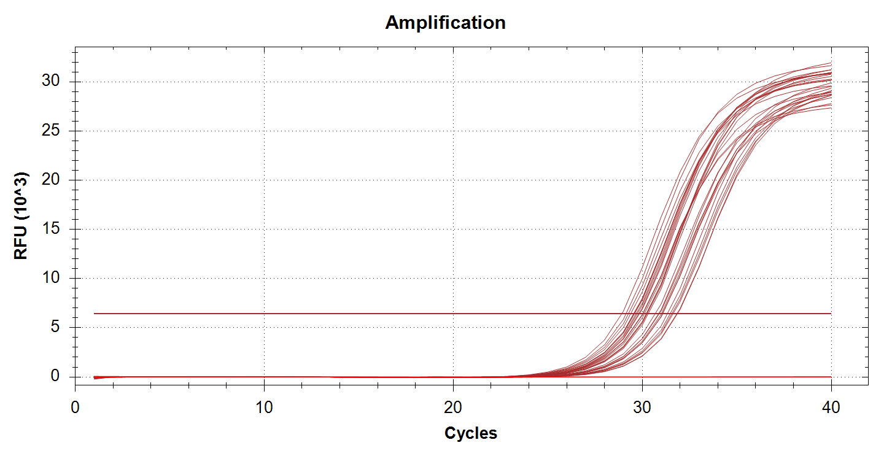
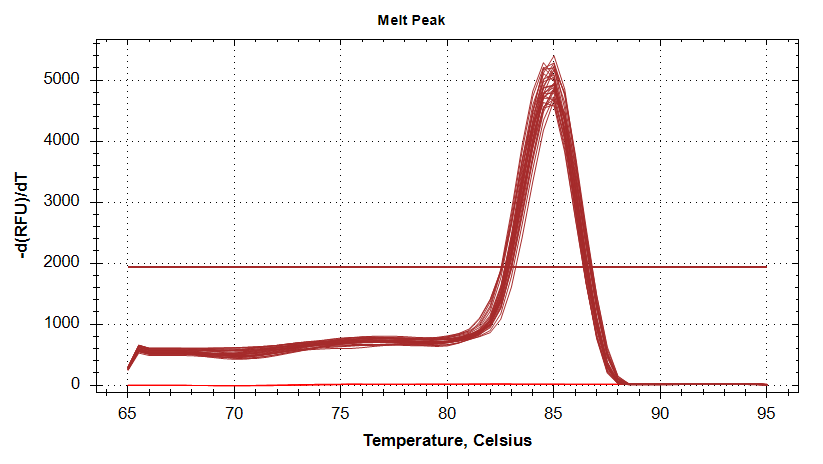

INTRO
Due to discrepancies in samples sizes used for analysis for some of the genes, I ran qPCRs on the PolyIC Control (*PC) samples (A1PC - A5PC, B1PC - B5PC) for the following genes: GAPDH, DNMT1, cGAS, HSP90, and VIPERIN. Other than GAPDH, these samples had not been run previously. This was due to the fact that this project stemmed from work performed by Valentina and me. Valentina did not run these genes originally. However, I did run them using my cDNA because these were just the typical suite of stress response genes we were consistently evaluating at the time. I did not realize Valentina had only looked a few genes.
GAPDH on the other hand, had been run by either Valentina and/or Akriti. However, there appeared to be a potential batch effect, as well as a potential treatment effect. This was a concern because GAPDH had been used as the normalizing gene.
So, the goal of this round of qPCRs was to equalize sample sizes across all genes for the poly:IC control samples, and try to remove a potential batch effect in GAPDH.
These samples are Valentina’s cDNA from 8/12/2025.
Previous qPCRs for this project:
2026-01-27-qPCRs - M.gigas Valentina PolyIC cGAS, citrate_synthase, and DNMT1
2026-01-28-qPCRs - M.gigas Valentina PolyIC ATP synthase, GAPDH, HSP70, and HSP90
This notebook does not have any analysis. This will be performed later.
The analysis is available in the polyIC-larvae GitHub repo:
MATERIALS & METHODS
qPCR Setup
Primers
The following primer sets were run:
| SR ID | Primer Name |
|---|---|
| 1172 | Cg_GAPDH_205_F |
| 1173 | Cg_GAPDH_355_R |
| 1510 | Cg_DNMT1_F |
| 1511 | Cg_DNMT1_R |
| 1827 | Cg_cGAS_F |
| 1826 | Cg_cGAS_R |
| 1532 | Cg_Hsp90_F |
| 1533 | Cg_Hsp90_R |
| 1829 | Cg_VIPERIN_F |
| 1828 | Cg_VIPERIN_R |
Master mix
All samples were run in triplicate, on low-profile, white 96-well plates (USA Scientific) sealed with TemPlate TR Select Optical Film (USA Scientific) in a CFX Connect (Bio-Rad) or CFX96 (Bio-Rad) real-time thermalcycler. All reactions consisted of the following:
| Component | Stock Concentration | Volume (uL) |
|---|---|---|
| cDNA | NA | 1 |
| SsoAdvanced Universal SYBR Green Supermix (BioRad) | 2x | 10 |
| PF | 10uM | 0.5 |
| PR | 10uM | 0.5 |
| H2O | NA | 8 |
| TOTAL | 20 |
Each primer set’s master mix included no template controls (NTCs). Plates were set up as follows:
| Plate | Instrument | Genes |
|---|---|---|
| 01 | CFX Connect | VIPERIN, DNMT1 |
| 02 | CFX96 | HSP90, cGAS |
| 03 | CFX Connect | GAPDH |
For cycling parameters, plate layouts, etc. see the qPCR reports in RESULTS section below.
Software Settings
After running, and before data export, CFX Maestro was used to label all wells with their Target (i.e. gene) and sample names in the Bio-Rad .pcrd qPCR file.
If a plate contained multiple primer sets, Analsyis Mode... was set to Target to ensure that the auto-baseline threshold was set properly. This is opposed to the default setting, Fluorophore, which takes all wells into account when setting the baseline threshold. We want each primer set evaluated independently, since each primer set will behave slightly differently than each other.
RESULTS
Summary
All amp and melt plots look good (i.e. strong amplification, no amplification in NTCs, single peaks in melt curves)
Files
report-*.pdf: qPCR Reports. Contains plate layouts, cycling params, amp/melt plots, etc.*Cq_Results.csv: Cycle quantity (Cq) data.*.pcrd: Source qPCR data file. Requires CFX Maestro (Bio-Rad) software to open. Genes run on the same plate share a single.pcrdfile.
GAPDH
Cq Data
Report
CFX File
DNMT1
Cq Data
Report
CFX File
cGAS
Cq Data
Report
CFX File
HSP90
Cq Data
Report
CFX File
VIPERIN
Cq Data
Report
CFX File
Plots









